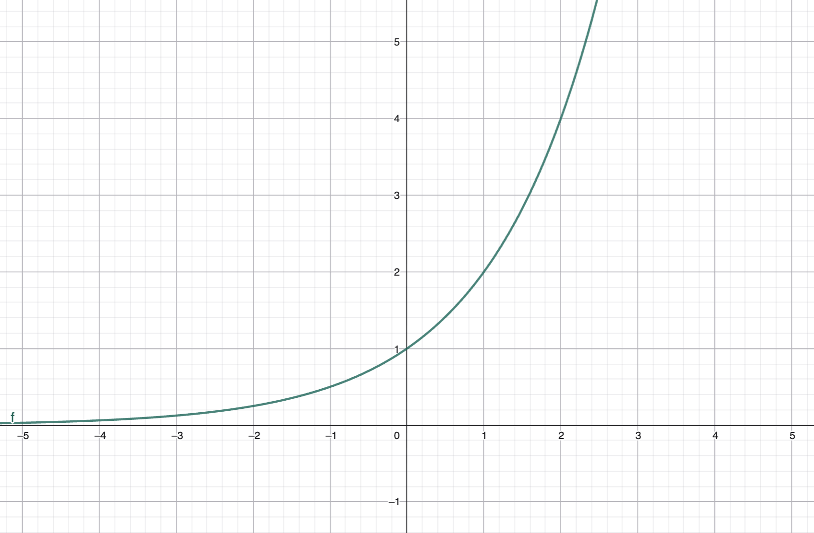
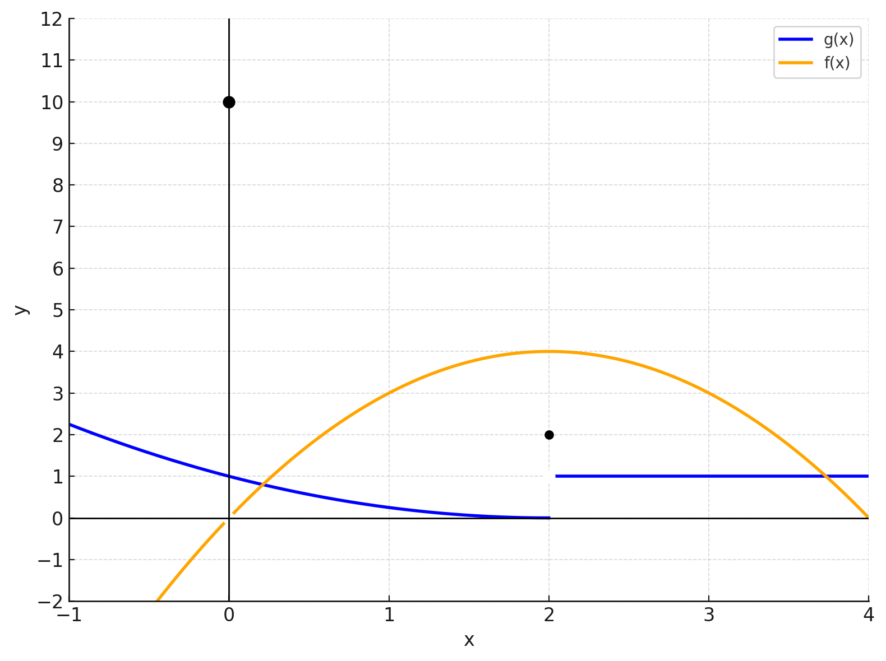

You may click here to download the PDF version.
3.1 Core Concepts
Assume that \(f(x)\) exists for all values \(x\) close (but not necessarily equal) to \(a\). Then there is a \[ \lim_{x\to a} f(x)=L \] if and only if \[ \lim_{x\to a^+} f(x)=\lim_{x\to a^-} f(x)=L. \]
To evaluate the limit at infinity of a rational function we divide the numerator and denominator of the expression by \(x^n\), where \(n\) is the highest power present in the denominator of the expression.
A function \(f\) is continuous at a number \(a\) if
- \(f(a)\) is defined,
- \(\lim\limits_{x\to a}f(x)\) exists,
- \(f(a)=\lim\limits_{x\to a}f(x)\)
A function \(f\) is continuous on an interval if it is continuous at every number in the interval.
Assume that
- \(f\) is continuous on a closed interval \([a, b]\),
- \(f(a)\) and \(f(b)\) have different signs.
Then there exists at least one solution of the equation \(f(x)=0\) in the interval \((a, b)\).
When evaluating limits, you may encounter these four scenarios:
- If substituting the value into the function gives a result of \(\dfrac{c}{\infty}\), where \(c\) is any real number, then the limit will be 0.
- If the substitution results in \(\dfrac{\pm\infty}{c}\), where \(c\) is a non-zero real number, then the limit will be \(\pm\infty\).
- If the substitution results in \(\dfrac{c}{0}\), the limit could be either \(+\infty\), \(-\infty\), or it might not exist (DNE).
- If the substitution results in an indeterminate form, such as \(\dfrac{0}{0}\) or \(\dfrac{\infty}{\infty}\), then you cannot directly determine the limit. In such cases, use algebraic techniques, such as factoring or cancelling terms, to simplify the function.
Easy ★
-
Module 3 — Easy — 1
Suppose \(\displaystyle \lim_{x\to a} f(x)=0\) and \(\displaystyle \lim_{x\to a} g(x)=0\). Which of the following limits can you compute, given the information?- \(\displaystyle \lim_{x\to a} \frac{f(x)}{5}\)
- \(\displaystyle \lim_{x\to a} \frac{5}{f(x)}\)
- \(\displaystyle \lim_{x\to a} \frac{f(x)}{g(x)}\)
- \(\displaystyle \lim_{x\to a} f(x)g(x)\)
Answer
(a) and (d).
Full Solution
By limit laws, \(\displaystyle \lim_{x\to a}\frac{f(x)}{5}=\frac{1}{5}\lim_{x\to a}f(x)=0\), so (a) is computable.
For (b), since \(\displaystyle\lim_{x\to a} f(x)=0\), the reciprocal \(\frac{5}{f(x)}\) need not approach a finite value; the expression can diverge, so it is not computable from the given information alone.
For (c), \(\frac{f(x)}{g(x)}\) is a \(\frac{0}{0}\) indeterminate form; without more information, the limit cannot be determined.
For (d), \(\displaystyle\lim_{x\to a} f(x)g(x)=\bigl(\lim_{x\to a} f(x)\bigr)\bigl(\lim_{x\to a} g(x)\bigr)=0\cdot 0=0\), so it is computable.
-
Module 3 — Easy — 2
Evaluate \(\displaystyle \lim_{x\to 6} \frac{4(x-6)^2}{x}\).Answer
\(0\).
Full Solution
Substitute \(x=6\):
\[ \lim_{x\to 6}\frac{4(x-6)^2}{x} =\frac{4(6-6)^2}{6} =\frac{0}{6} =0. \]
-
Module 3 — Easy — 3
\(\displaystyle \lim_{x\to 2}\left(\frac{6x-2}{2x+1}\right)^3\).Answer
\(8\).
Full Solution
First, evaluate the limit of the inner rational expression. \[ \lim_{x\to 2}\frac{6x-2}{2x+1} =\frac{6(2)-2}{2(2)+1} =\frac{12-2}{5} =\frac{10}{5} =2. \]
Since the cube function is continuous for all real numbers, we can apply the limit law for continuous functions: \[ \lim_{x\to 2}\left(\frac{6x-2}{2x+1}\right)^3 =\left(\lim_{x\to 2}\frac{6x-2}{2x+1}\right)^3 =(2)^3 =8. \]
-
Module 3 — Easy — 4
\(\displaystyle \lim_{x\to 2}\frac{x-2}{x^2-4}\).Answer
\(\dfrac{1}{4}\).
Full Solution
First, substitute \(x=2\) directly into the expression: \[ \frac{2-2}{2^2-4} = \frac{0}{0}. \] This is an indeterminate form, so we need to simplify the expression before evaluating the limit.
Factor the denominator: \[ x^2 - 4 = (x - 2)(x + 2). \] For \(x \neq 2\), \[ \frac{x - 2}{x^2 - 4} = \frac{x - 2}{(x - 2)(x + 2)} = \frac{1}{x + 2}. \]
Now take the limit of the simplified form: \[ \lim_{x\to 2}\frac{x-2}{x^2-4} = \lim_{x\to 2}\frac{1}{x+2} = \frac{1}{4}. \]
-
Module 3 — Easy — 5
\(\displaystyle \lim_{r\to -5}\frac{r}{r^2+10r+25}\).Answer
Diverges to \(-\infty\) (so the limit does not exist as a real number).
Full Solution
Note \(r^2+10r+25=(r+5)^2\). Then \[ \frac{r}{r^2+10r+25} =\frac{r}{(r+5)^2}. \] As \(r\to -5\), the denominator \((r+5)^2\to 0^+\) while the numerator \(r\to -5\). Thus the quotient tends to a negative number divided by a very small positive number, i.e. \(-\infty\). Therefore the (two-sided) limit does not exist as a finite real number, and the divergence is to \(-\infty\).
-
Module 3 — Easy — 6
\(\displaystyle \lim_{x\to\infty}\frac{5x^2+10}{3x^3+2x^2+x}\).Answer
\(0\).
Full Solution
First, note that direct substitution as \(x \to \infty\) gives an indeterminate form \(\dfrac{\infty}{\infty}\). To this end, divide both the numerator and denominator by \(x^3\) which is the highest power of \(x\) in the denominator: \[ \lim_{x\to\infty}\frac{5x^2+10}{3x^3+2x^2+x} = \lim_{x\to\infty}\frac{\frac{5}{x}+\frac{10}{x^3}}{3+\frac{2}{x}+\frac{1}{x^2}}. \]
As \(x \to \infty\), all terms with \(\frac{1}{x}\), \(\frac{1}{x^2}\), or \(\frac{1}{x^3}\) tend to \(0\): \[ \lim_{x\to\infty}\frac{\frac{5}{x}+\frac{10}{x^3}}{3+\frac{2}{x}+\frac{1}{x^2}} = \frac{0}{3} = 0. \]
Video solution
The video solution is available here .
-
Module 3 — Easy — 7
\(\displaystyle \lim_{x\to -\infty} 2^x\).Answer
\(0\).
Full Solution
Write \(2^x\) as a reciprocal: \[ 2^x=\frac{1}{2^{-x}}. \] As \(x\to -\infty\), we have \(-x\to +\infty\). Since the exponential function grows without bound, \[ \lim_{x\to -\infty} 2^{-x}=\infty. \] Therefore, by the reciprocal limit law, \[ \lim_{x\to -\infty}2^x =\lim_{x\to -\infty}\frac{1}{2^{-x}} =\frac{1}{\infty} =0. \]
Alternative Solution:
The graph of \(y=2^x\) is strictly increasing, passes through \((0,1)\), and has a horizontal asymptote \(y=0\) as \(x\to -\infty\). This shows that the function values approach \(0\) for large negative \(x\).
 -
Module 3 — Easy — 8
Suppose \(f(t)\) is continuous at \(t=5\). Is it true or false that \(t=5\) is in the domain of \(f(t)\)?Answer
True.
Full Solution
By definition of continuity at \(a\), the value \(f(a)\) must be defined. Therefore, if \(f\) is continuous at \(t=5\), then \(5\) is in the domain of \(f\).
-
Module 3 — Easy — 9
Suppose \(\displaystyle \lim_{t\to 5} f(t)=17\), and suppose \(f(t)\) is continuous at \(t=5\). Is it true or false that \(f(5)=17\)?Answer
True.
Full Solution
Continuity at \(t=5\) means \(\displaystyle \lim_{t\to 5} f(t)=f(5)\). Given the limit equals \(17\), it follows that \(f(5)=17\).
-
Module 3 — Easy — 10
Find all points for which the function is continuous \(f(x)=\displaystyle \frac{1}{x^2-1}\).Answer
Continuous on \((-\infty,-1)\cup(-1,1)\cup(1,\infty)\).
Full Solution
The given function is \[ f(x) = \frac{1}{x^2 - 1}. \] This is a rational function, that is, a quotient of two polynomials. Since polynomials are continuous for all real numbers, the only possible discontinuities occur where the denominator is zero.
Set the denominator equal to zero to find these points: \[ x^2 - 1 = 0. \] Factor: \[ (x - 1)(x + 1) = 0. \] Therefore, \[ x = 1 \quad \text{or} \quad x = -1. \]
At these \(x\)-values, the denominator becomes \(0\), so \(f(x)\) is undefined. Hence, \(f(x)\) is discontinuous at \(x = -1\) and \(x = 1\).
For all other values of \(x\), the denominator \(x^2 - 1 \neq 0\), so \(f(x)\) is continuous. In interval notation, the set of all points where \(f\) is continuous is: \[ (-\infty,-1)\cup(-1,1)\cup(1,\infty). \]
Indeterminate ★★
-
Module 3 — Indeterminate — 1
Find two functions \(f(x)\) and \(g(x)\) that satisfy \(\lim\limits_{x\to 5}f(x)=\lim\limits_{x\to 5}g(x)=0\) and \(\displaystyle \lim\limits_{x\to 5}\frac{f(x)}{g(x)}=3\).Answer
One choice: \(f(x)=3(x-5)\), \(g(x)=(x-5)\).
Full Solution
Take \(f(x)=3(x-5)\) and \(g(x)=x-5\). Then \(\lim\limits_{x\to 5}f(x)=0\) and \(\lim\limits_{x\to 5}g(x)=0\). Moreover, \[ \lim_{x\to 5}\frac{f(x)}{g(x)} =\lim_{x\to 5}\frac{3(x-5)}{x-5} =\lim_{x\to 5}3 =3. \] Many other pairs are possible, e.g. \(f(x)=3(x-5)h(x)\), \(g(x)=(x-5)h(x)\) for any \(h\) continuous and nonzero at \(x=5\).
-
Module 3 — Indeterminate — 2
Find two functions \(f(x)\) and \(g(x)\) that satisfy \(\lim\limits_{x\to 5}f(x)=\lim\limits_{x\to 5}g(x)=0\) and \(\displaystyle \lim\limits_{x\to 5}\frac{f(x)}{g(x)}=0\).Answer
One choice: \(f(x)=3(x-5)^2\), \(g(x)=x-5\).
Full Solution
With \(f(x)=3(x-5)^2\) and \(g(x)=x-5\), both limits to \(0\) at \(x=5\). Then \[ \lim_{x\to 5}\frac{f(x)}{g(x)}=\lim_{x\to 5}\frac{3(x-5)^2}{x-5} =\lim_{x\to 5}3(x-5)=0. \] Intuitively, the numerator vanishes “faster” (quadratically) than the denominator (linearly).
-
Module 3 — Indeterminate — 3
\(\displaystyle \lim\limits_{h\to 0} \frac{(2+h)^2-4}{2h}\)Answer
\(2\).
Full Solution
First expand the numerator: \[ (2+h)^2-4 = 4+4h+h^2-4 = 4h+h^2. \] Hence \[ \lim_{h\to 0}\frac{(2+h)^2-4}{2h} \;=\; \lim_{h\to 0}\frac{4h+h^2}{2h}. \] For \(h\neq 0\), factor and cancel \(h\): \[ \frac{4h+h^2}{2h} = \frac{h(4+h)}{2h} = \frac{4+h}{2}. \] Therefore, by limit laws, \[ \lim_{h\to 0}\frac{(2+h)^2-4}{2h} = \lim_{h\to 0}\frac{4+h}{2} = \frac{1}{2}\,\lim_{h\to 0}(4+h) = \frac{1}{2}\,(4+0) = 2. \]
-
Module 3 — Indeterminate — 4
\(\displaystyle \lim\limits_{x\to -1} \frac{\sqrt{x^2+8}-3}{x+1}\)Answer
\(-\dfrac{1}{3}\).
Full Solution
Direct substitution gives \(\dfrac{0}{0}\), an indeterminate form. Multiply by the conjugate: \[ \frac{\sqrt{x^2+8}-3}{x+1}\cdot \frac{\sqrt{x^2+8}+3}{\sqrt{x^2+8}+3} = \frac{x^2+8-9}{(x+1)\bigl(\sqrt{x^2+8}+3\bigr)} = \frac{x^2-1}{(x+1)\bigl(\sqrt{x^2+8}+3\bigr)}. \] Factor the numerator: \[ \frac{(x-1)(x+1)}{(x+1)\bigl(\sqrt{x^2+8}+3\bigr)} =\frac{x-1}{\sqrt{x^2+8}+3}\quad(x\neq -1). \] Now take the limit: \[ \lim_{x\to -1}\frac{x-1}{\sqrt{x^2+8}+3} = \frac{-2}{\sqrt{1+8}+3} =\frac{-2}{3+3} =-\frac{1}{3}. \]
-
Module 3 — Indeterminate — 5
\(\displaystyle \lim\limits_{t\to 1} \frac{3t-3}{2-\sqrt{5-t}}\)Answer
\(12\).
Full Solution
Substitution gives \(\frac{0}{0}\). Multiply by the conjugate of the denominator: \[ \frac{3(t-1)}{2-\sqrt{5-t}}\cdot \frac{2+\sqrt{5-t}}{2+\sqrt{5-t}} = \frac{3(t-1)\bigl(2+\sqrt{5-t}\bigr)}{4-(5-t)} = \frac{3(t-1)\bigl(2+\sqrt{5-t}\bigr)}{t-1}. \] For \(t\neq 1\) the factor \(t-1\) cancels, so \[ \lim_{t\to 1}\frac{3t-3}{2-\sqrt{5-t}} = 3\bigl(2+\sqrt{4}\bigr)=3(2+2)=12. \]
-
Module 3 — Indeterminate — 6
\(\displaystyle \lim\limits_{t\to \frac{1}{2}} \frac{\frac{1}{3t^2}+\frac{1}{t^2-1}}{2t-1}\)Answer
\(-\dfrac{32}{9}\).
Full Solution
Begin with the given expression: \[ \lim_{t\to \frac{1}{2}} \frac{\frac{1}{3t^2}+\frac{1}{t^2-1}}{2t-1}. \] Combine the fractions in the numerator using a common denominator: \[ \lim_{t\to \frac{1}{2}} \frac{\frac{(t^2-1)+3t^2}{3t^2(t^2-1)}}{2t-1} = \lim_{t\to \frac{1}{2}} \frac{4t^2-1}{3t^2(t^2-1)(2t-1)}. \] Factor \(4t^2-1=(2t-1)(2t+1)\): \[ \lim_{t\to \frac{1}{2}} \frac{(2t-1)(2t+1)}{3t^2(t^2-1)(2t-1)}. \] For \(t\neq \frac{1}{2}\), cancel the factor \(2t-1\): \[ \lim_{t\to \frac{1}{2}} \frac{2t+1}{3t^2(t^2-1)}. \] Now substitute \(t=\frac{1}{2}\): \[ \lim_{t\to \frac{1}{2}} \frac{2t+1}{3t^2(t^2-1)} = \frac{2(\tfrac{1}{2})+1}{3(\tfrac{1}{2})^2\bigl((\tfrac{1}{2})^2-1\bigr)} = \frac{2}{\frac{3}{4}\cdot(-\frac{3}{4})} =\frac{2}{-\frac{9}{16}} =-\frac{32}{9}. \] Therefore, \[ \boxed{\displaystyle \lim_{t\to \frac{1}{2}} \frac{\frac{1}{3t^2}+\frac{1}{t^2-1}}{2t-1} = -\frac{32}{9}.} \]
-
Module 3 — Indeterminate — 7
Find all values of \(c\) such that the following function is continuous at \(x=c\) \[ f(x)= \begin{cases} 8-cx, & \text{$x \leq c$},\\[4pt] x^2, & \text{$x > c$}. \end{cases} \]Answer
\(c=\pm 2.\)
Full Solution
To determine the value(s) of \(c\) for which \(f(x)\) is continuous at \(x=c\), we must satisfy the continuity condition: \[ \lim_{x\to c^-} f(x) = \lim_{x\to c^+} f(x) = f(c). \]
Compute each component:
(1) Left-hand limit (\(x\to c^-\)): \[ \lim_{x\to c^-} f(x) = \lim_{x\to c^-} (8-cx) = 8 - c\cdot c = 8 - c^2. \] (2) Right-hand limit (\(x\to c^+\)): \[ \lim_{x\to c^+} f(x) = \lim_{x\to c^+} x^2 = c^2. \] (3) Function value at \(x=c\) (from the top branch, since \(x=c\) satisfies \(x\le c\)): \[ f(c) = 8 - c\cdot c = 8 - c^2. \]For continuity at \(x=c\), we require \[ \lim_{x\to c^-} f(x) = \lim_{x\to c^+} f(x), \] which gives \[ 8 - c^2 = c^2. \] Simplify: \[ 8 = 2c^2 \quad\Longrightarrow\quad c^2 = 4 \quad\Longrightarrow\quad c = \pm 2. \]
At these values, \[ f(c) = 8 - c^2 = c^2, \] confirming that \(f(x)\) is continuous at \(x = -2\) and \(x = 2.\)
Video Solution
The video solution is available here .
-
Module 3 — Indeterminate — 8
Show that equation \(x^3 = 20 + \sqrt{x}\) has a solution.Answer
There is at least one solution in \((2,3)\) by the Intermediate Value Theorem.
Full Solution
Consider the function \[ F(x) = x^3 - 20 - \sqrt{x}, \quad x \ge 0. \] Since both \(x^3\) and \(\sqrt{x}\) are continuous on \([0,\infty)\), their difference \(F(x)\) is also continuous on this interval.
Evaluate \(F(x)\) at two convenient points: \[ F(2) = 2^3 - 20 - \sqrt{2} = 8 - 20 - \sqrt{2} < 0, \qquad F(3) = 3^3 - 20 - \sqrt{3} = 27 - 20 - \sqrt{3} > 0. \] Thus \(F(2) < 0 < F(3)\).
By the Intermediate Value Theorem, since \(F(x)\) is continuous on \([2,3]\) and changes sign between \(x = 2\) and \(x = 3\), there must exist at least one number \(c \in (2,3)\) such that \(F(c) = 0\).
Therefore, the equation \[ x^3 = 20 + \sqrt{x} \] has at least one real solution with \(x \in (2,3)\).
-
Module 3 — Indeterminate — 9
Show that equation \(x^2 - 4x^3 + 1 = x - 7\) has a solution.Answer
There is at least one solution in \((1,2)\) by the Intermediate Value Theorem.
Full Solution
Rewrite the given equation in the form \(G(x) = 0\), where \[ G(x) = x^2 - 4x^3 + 1 - (x - 7) = -4x^3 + x^2 - x + 8. \] The function \(G(x)\) is a polynomial, so it is continuous for all real numbers.
Evaluate \(G(x)\) at two convenient points: \[ G(1) = -4(1)^3 + (1)^2 - 1 + 8 = -4 + 1 - 1 + 8 = 4 > 0, \] \[ G(2) = -4(2)^3 + (2)^2 - 2 + 8 = -32 + 4 - 2 + 8 = -22 < 0. \] Since \(G(1) > 0\) and \(G(2) < 0\), \(G(x)\) changes sign on the interval \([1,2]\).
By the Intermediate Value Theorem, because \(G(x)\) is continuous on \([1,2]\) and takes opposite signs at the endpoints, there exists a number \(c \in (1,2)\) such that \(G(c) = 0\).
Therefore, the equation \[ x^2 - 4x^3 + 1 = x - 7 \] has at least one real solution in the interval \((1,2)\).
-
Module 3 — Indeterminate — 10
Suppose the demand function for a certain product is given by \(D(p) = 1000 - 50p\), where \(D\) is the quantity demanded and \(p\) is the price per unit. The price per unit, \(p\), cannot be less than zero.- Find the limit of the demand function as the price per unit (p) approaches zero.
- Explain the economic significance of this limit in the context of the demand function.
Answer
(a) \(1000\). (b) At a zero price, the model predicts maximum demand of \(1000\) units.
Full Solution
(a) Compute: \[ \lim_{p\to 0}D(p)=\lim_{p\to 0}(1000-50p)=1000. \] (b) Interpretation: as price falls to \$0, consumers demand \(1000\) units according to this linear model; that is, \(1000\) represents the intercept (maximum feasible demand) when price is free.
-
Module 3 — Indeterminate — 11
A classmate from your Math 154 course attempted this problem. Identify if they’ve solved it correctly. If you find any errors, point out the step where the mistake occurred and provide the correct solution.Problem: Determine if there exists a root of the equation \(f(x) = \dfrac{1}{x-2}\) in the interval \([1,3]\) using the Intermediate Value Theorem.
Student's Solution:
Step 1: \(f(x) = \dfrac{1}{x-2}\) is continuous on \([1,3]\).
Step 2: \(f(1) = -1\), \(f(3) = 1\).
Step 3: \(f(1) < 0\) and \(f(3) > 0\).
Step 4: Conclude that, by the Intermediate Value Theorem, there exists a root in \([1,3]\).Answer
Incorrect: \(f\) is not continuous on \([1,3]\) (there is a discontinuity at \(x=2\)). IVT does not apply; moreover, \(f(x)\neq 0\) for all \(x\), so there is no root.
Full Solution
The claim in Step 1 is false. The function \(f(x)=\dfrac{1}{x-2}\) has a vertical asymptote at \(x=2\) and is not defined there, so it is not continuous on the closed interval \([1,3]\). Since continuity on the entire interval is a hypothesis of the Intermediate Value Theorem, IVT cannot be used to assert a root.
In fact, \(f(x)=0\) has no solution because \(\frac{1}{x-2}=0\) is impossible (the numerator is \(1\)). Thus there is no root in \([1,3]\) (or anywhere).
-
Module 3 — Indeterminate — 12
Consider the graphs of the two functions \(f\) and \(g\) shown below.Using the graph, evaluate the following limits or state that they do not exist.
- \(\displaystyle \lim_{x\to 0} f(x)\)
- \(\displaystyle \lim_{x\to 2^-} g(x)\)
- \(\displaystyle \lim_{x\to 2^+} g(x)\)
- \(\displaystyle \lim_{x\to 2} g(x)\)
- \(\displaystyle \lim_{x\to 2^+} f(g(x))\)
Answer
(a) \(0\) (b) \(0\) (c) \(1\) (d) DNE (e) \(3\)
Full Solution
(a) Near \(x=0\), the graph of \(f\) follows the orange parabola, which approaches height \(0\) from both sides, even though there is a filled dot at \((0,10)\). The limit depends on the nearby values, not the value at the point, so \[ \lim_{x\to 0} f(x)=0. \]
(b) As \(x\to 2^-\), the blue graph of \(g\) approaches the open circle at height \(0\). Thus \[ \lim_{x\to 2^-} g(x)=0. \]
(c) As \(x\to 2^+\), the blue graph becomes a horizontal line at height \(1\). Therefore \[ \lim_{x\to 2^+} g(x)=1. \]
(d) The one-sided limits do not agree: \[ \lim_{x\to 2^-} g(x)=0,\qquad \lim_{x\to 2^+} g(x)=1. \] Since these are different, the two-sided limit does not exist: \[ \lim_{x\to 2} g(x) = \text{DNE}. \]
(e) For the composition, first note that from part (c), \[ \lim_{x\to 2^+} g(x)=1. \] From the graph, \(f\) is continuous at \(x=1\) (the orange curve has no holes or jumps there, and \(f(1)=3\)). Because \(f\) is continuous at \(1\), we may use the limit-of-a-composition rule: \[ \lim_{x\to 2^+} f(g(x)) = f\!\left(\lim_{x\to 2^+} g(x)\right) = f(1) = 3. \]
Challenging ★★★
-
Module 3 — Challenging — 1
\(\displaystyle \lim_{x\to 0}\left(10+\frac{|x|}{x}\right)\)Answer
Does not exist (DNE).
Full Solution
Recall that \[ |x| = \begin{cases} x, & x>0,\\ -x, & x<0. \end{cases} \] For \(x>0\), \[ \frac{|x|}{x} = \frac{x}{x} = 1 \quad\Longrightarrow\quad \lim_{x\to 0^+}\!\left(10+\frac{|x|}{x}\right) = 10 + 1 = 11. \] For \(x<0\), \[ \frac{|x|}{x} = \frac{-x}{x} = -1 \quad\Longrightarrow\quad \lim_{x\to 0^-}\!\left(10+\frac{|x|}{x}\right) = 10 - 1 = 9. \] Since the left and right limits are not equal (\(9 \neq 11\)), the two-sided limit does not exist: \[ \boxed{\displaystyle \lim_{x\to 0}\left(10+\frac{|x|}{x}\right)\text{ DNE.}} \]
-
Module 3 — Challenging — 2
\(\displaystyle \lim_{x\to\infty}\frac{\sqrt{3x^8+7x^4}+10}{x^4-2x^2+1}\)Answer
\(\sqrt{3}\).
Full Solution
Divide numerator and denominator by \(x^4\), the highest power in the denominator: \[ \lim_{x\to\infty}\frac{\sqrt{3x^8+7x^4}+10}{x^4-2x^2+1} =\lim_{x\to\infty}\frac{x^4\left(\sqrt{3+\tfrac{7}{x^4}}+\tfrac{10}{x^4}\right)}{x^4(1-\tfrac{2}{x^2}+\tfrac{1}{x^4})}. \] Simplify: \[ \lim_{x\to\infty}\frac{\sqrt{3+\tfrac{7}{x^4}}+\tfrac{10}{x^4}}{1-\tfrac{2}{x^2}+\tfrac{1}{x^4}} = \frac{\sqrt{3}}{1} = \sqrt{3}. \]
-
Module 3 — Challenging — 3
\(\displaystyle \lim_{x\to\infty}\!\left(\sqrt{x^2+x}-x\right)\)Answer
\(\tfrac{1}{2}\).
Full Solution
Multiply by the conjugate: \[ \lim_{x\to\infty}\!\left(\sqrt{x^2+x}-x\right) = \lim_{x\to\infty}\frac{(\sqrt{x^2+x}-x)(\sqrt{x^2+x}+x)}{\sqrt{x^2+x}+x} = \lim_{x\to\infty}\frac{x^2+x-x^2}{\sqrt{x^2+x}+x}. \] Simplify numerator: \[ = \lim_{x\to\infty}\frac{x}{\sqrt{x^2+x}+x} = \lim_{x\to\infty}\frac{x}{x\left(\sqrt{1+\tfrac{1}{x}}+1\right)} = \lim_{x\to\infty}\frac{1}{\sqrt{1+\tfrac{1}{x}}+1} = \frac{1}{2}. \]
-
Module 3 — Challenging — 4
Find all values of \(c\) such that the following function is continuous at \(x=c\) \[ f(x)= \begin{cases} e^{cx}-e^x, & x\le c,\\[4pt] xe^x - ce^c, & x>c. \end{cases} \]Answer
\(c=0,1.\)
Full Solution
For continuity at \(x=c\), we require \[ \lim_{x\to c^-} f(x) \;=\; \lim_{x\to c^+} f(x) \;=\; f(c). \] From the definition, \[ \lim_{x\to c^-} f(x) = e^{c\cdot c} - e^c = e^{c^2} - e^c, \qquad \lim_{x\to c^+} f(x) = \lim_{x\to c^+} (x e^x - c e^c) = c e^c - c e^c = 0. \] Since the value at \(x=c\) comes from the first branch, we have \[ f(c) = e^{c^2} - e^c. \] Continuity thus requires \[ \lim_{x\to c^-} f(x) = f(c) \quad\text{and}\quad \lim_{x\to c^+} f(x) = f(c), \] i.e. \[ e^{c^2} - e^c = e^{c^2} - e^c \quad\text{(trivial)} \quad\text{and}\quad 0 = e^{c^2} - e^c. \] Hence \[ e^{c^2} = e^c \;\Longrightarrow\; c^2 = c \;\Longrightarrow\; c\in\{0,1\}. \]
-
Module 3 — Challenging — 5
The total revenue \(R(x)=100x\), and total cost \(C(x)=500+10x.\)- Find the limit of the average profit per unit as \(x\to\infty.\)
- Explain its economic interpretation.
Answer
\(\displaystyle \lim_{x\to\infty}\frac{P(x)}{x}=90.\)
Full Solution
The profit function is \(P(x)=R(x)-C(x)=100x-(500+10x)=90x-500.\) The average profit per unit is \[ \bar{P}(x)=\frac{P(x)}{x}=\frac{90x-500}{x}=90-\frac{500}{x}. \] Taking the limit: \[ \lim_{x\to\infty}\bar{P}(x)=90. \] As \(x\) increases, the fixed cost per unit \(\frac{500}{x}\) becomes negligible, so the average profit per unit approaches \$90 — the marginal profit per unit sold.
-
Module 3 — Challenging — 6
Let \(f(x)=x^3-6x^2+9x-3.\) Prove that there exist at least two distinct roots of \(f(x)=0\) in \((1,4)\). Then, provide an interval for each root such that the interval width is no greater than \(1.\)Answer
There exist two distinct roots: \(C_1 \in (1,2)\) and \(C_2 \in (3,4)\).
Full Solution
Since \(f\) is a polynomial, it is continuous on all of \(\mathbb{R}\). Evaluate \(f\) at several points in \((1,4)\): \[ f(1)=1-6+9-3=1>0,\quad f(2)=8-24+18-3=-1<0, \] \[ f(3)=27-54+27-3=-3<0,\quad f(4)=64-96+36-3=1>0. \] Because \(f(1)>0\) and \(f(2)<0\), the Intermediate Value Theorem guarantees a root \(C_1 \in (1,2)\). Similarly, \(f(3)<0\) and \(f(4)>0\) imply a second root \(C_2 \in (3,4)\). \[ \therefore\ f(C_1)=0 \text{ for some } C_1\in(1,2), \quad \text{and} \quad f(C_2)=0 \text{ for some } C_2\in(3,4). \] Hence, there exist at least two distinct real roots of \(f(x)=0\): one in \((1,2)\) and another in \((3,4)\). Each interval has width \(1\), and since these intervals do not overlap, the two roots \(C_1\) and \(C_2\) are distinct and lie in separate regions of \((1,4)\).
Video solution
The video solution is available here.
-
Module 3 — Challenging — 7
A company produces and sells a product with a price-demand relationship \(D(p)=2000-50p.\) The unit cost is constant at \(5.\) Determine whether a price in \([10,30]\) yields profit \$750.- Find the profit function \(P(q)\), where \(q\) is quantity.
- Show there exists a price in \([10,30]\) where \(P(q)=750.\)
Answer
Profit function \(P(q)=-0.02q^2+35q.\) There exists \(q\in(10,30)\) with \(P(q)=750\) by IVT.
Full Solution
From \(D(p)=2000-50p\), express price as \(p=40-0.02q.\) The revenue function is \[ R(q)=p\cdot q=(40-0.02q)q=-0.02q^2+40q. \] The cost function is \(C(q)=5q.\) Hence the profit function is \[ P(q)=R(q)-C(q)=-0.02q^2+35q. \] Since \(P\) is a polynomial, it is continuous everywhere. Evaluate endpoints: \[ P(10)= -0.02(10)^2 + 35(10)=348<750,\qquad P(30)= -0.02(30)^2 + 35(30)=1032>750. \] Because \( P(10)< 750 < P(30)\) and \(P\) is continuous on \([10,30]\), the Intermediate Value Theorem guarantees \(c\in(10,30)\) with \(P(c)=750.\)